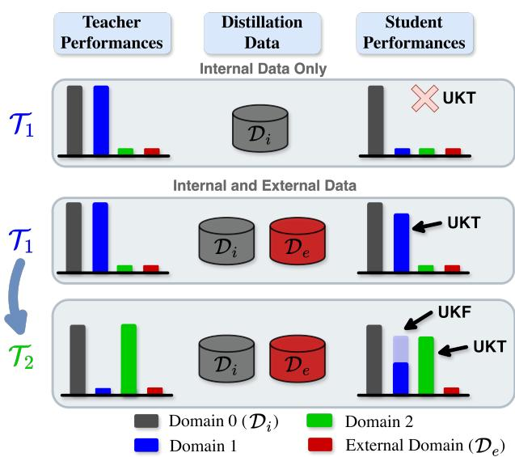

Continual Distillation of Teachers from Different Domains Nicolas Michel, Maorong Wang, Jiangpeng He, Toshihiko Yamasaki CVPR 2026 Open Access + arXiv 原文链接
编号2605.04059优先级P2类别CVPR 2026 Open Access + arXiv会议CVPR 2026 Open Access + arXiv方法学生按序从多个异构 teacher 蒸馏，使用外部未标注数据做 Self External Data Distillation，保留 logits 以降低 unseen knowledge forgetting。来源arXiv / OpenReview
Continual Distillation Figure 1Continual Distillation Figure 1. Overview of the Continual Distillation problem. A student model S learns through distillation from a sequence of teachers $\{ \mathcal { T } _ { 1 } , \mathcal { T } _ { 2 } , \mathcal { T } _ { 3 } \}$ . During distillation, part of the teachers’ training data is unavailable. The objective is for the student to maintain high performance on all domains known to the teachers, but not necessarily introduced to the student.这张图概括 Continual Distillation of Teachers from 的整体方法流程。阅读时先看模块之间传递的训练信号，再看作者如何把目标拆成可优化的子问题。

Figureure 3 · Illustration of Unseen Knowledge Transfer (UKT) and Unseen Knowledge FFigure 3. Illustration of Unseen Knowledge Transfer (UKT) and Unseen Knowledge Forgetting (UKF). When distilling only from $\mathcal { T } _ { 1 }$ on Internal Data $\mathcal { D } _ { i } .$ , only Domain 0 knowledge is transferred. When distilling from the same teacher $\mathcal { T } _ { 1 }$ on $\mathcal { D } _ { e } \cup \mathcal { D } _ { i } ,$ Domains 0 and 1 knowledge is transferred, although the student has never seen Domain 1. However, when continuing the sequence and distilling from $\mathcal { T } _ { 2 }$ , while the student acquires knowledge from Domain $2 ,$ , it forgets part of the knowlege from Domain 1.这张图来自论文 PDF 的结构化抽取。当前用于辅助理解 Continual Distillation of Teachers from 的方法或实验，请结合正文精读段落一起看。